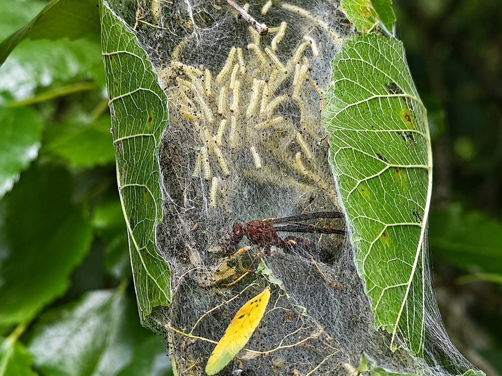

Field Gallery
Observing wildlife in its natural environment helps us better understand ecosystems and the countless interactions that keep them healthy.
Field Notes
Wildlife documentation is about much more than identifying animals. It records behavior, habitat, seasonal activity, predator-prey relationships, and environmental conditions that may otherwise go unnoticed.
Photographs captured during routine field work often become valuable records for future comparisons, allowing researchers and the public to observe changes over time.

One remarkable observation documented during field work involved a parasitic wasp hunting within a silk caterpillar nest. While often overlooked, parasitic wasps are among nature's most effective forms of biological pest control. Rather than relying on chemical pesticides, these insects naturally regulate caterpillar populations and help maintain ecological balance.
Healthy ecosystems often rely on predators that most people rarely notice. Tiny insects such as parasitic wasps quietly perform essential work that benefits forests, gardens, and agricultural landscapes around the world.
Wildlife photography and observation should always prioritize the well-being of the animals being documented. Respecting natural behavior, minimizing disturbance, and leaving habitats undisturbed are essential principles of ethical field observation.